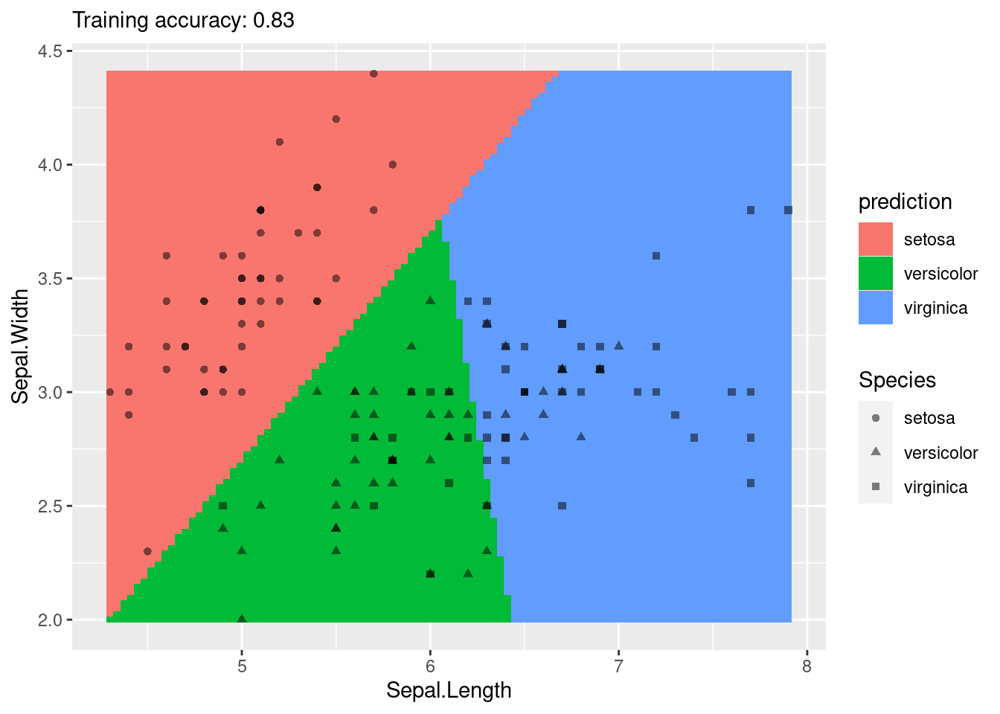
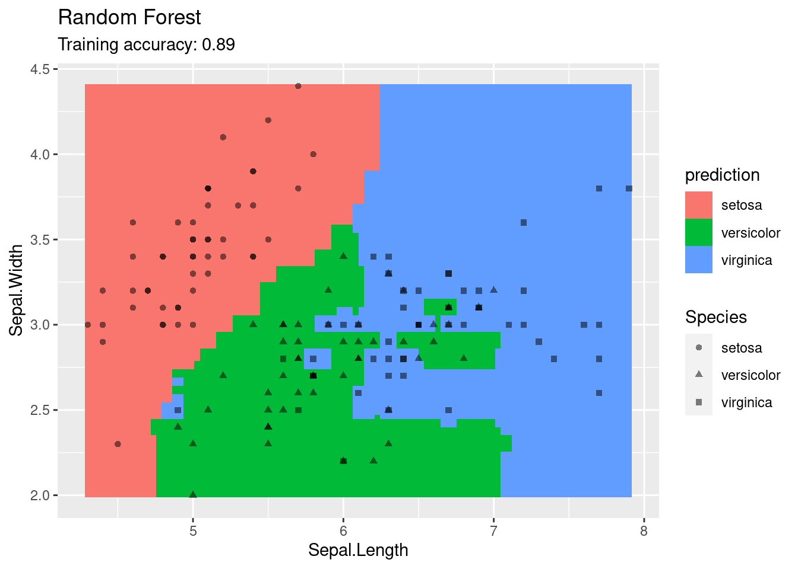
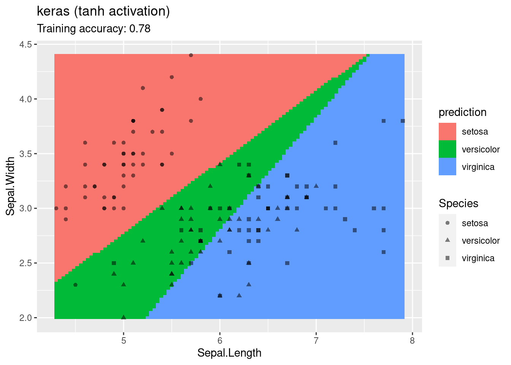
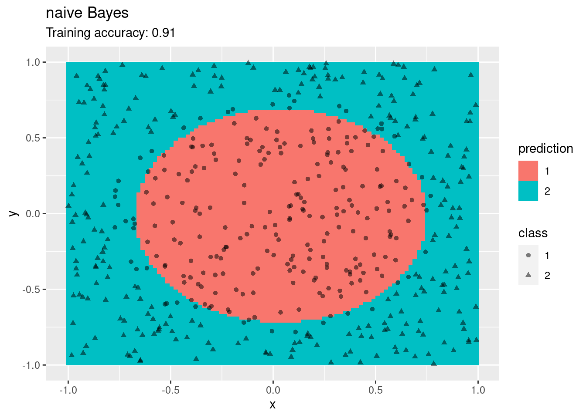
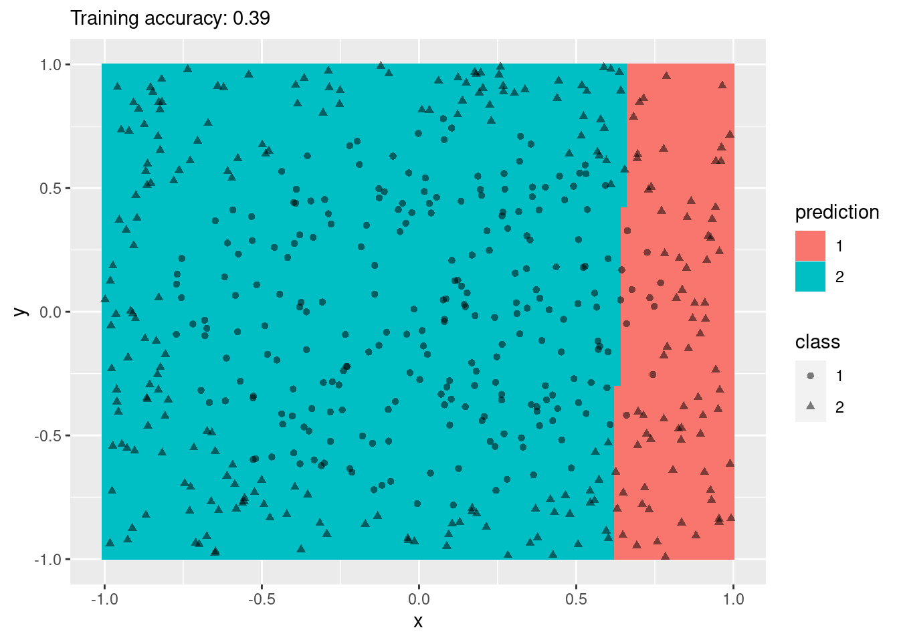
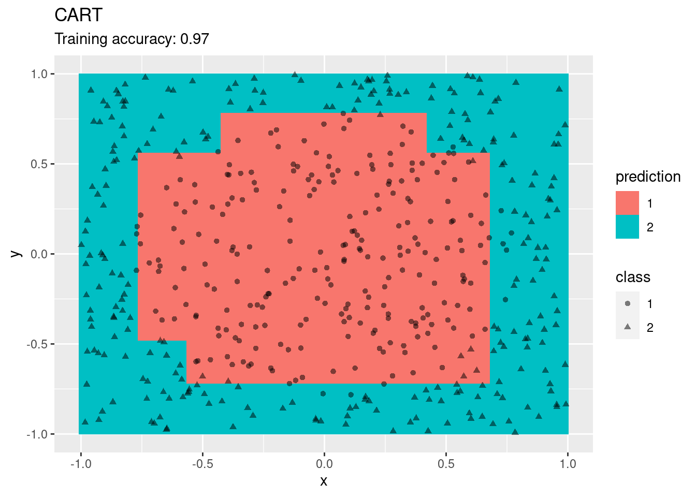
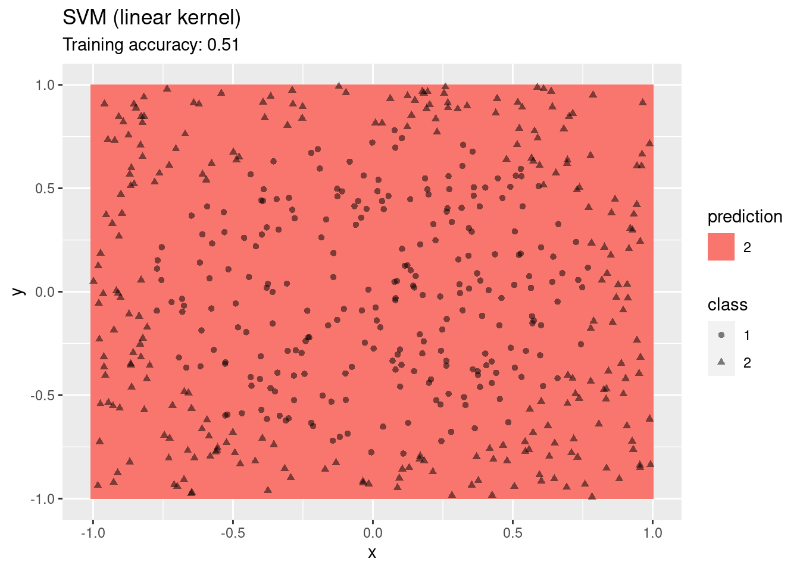
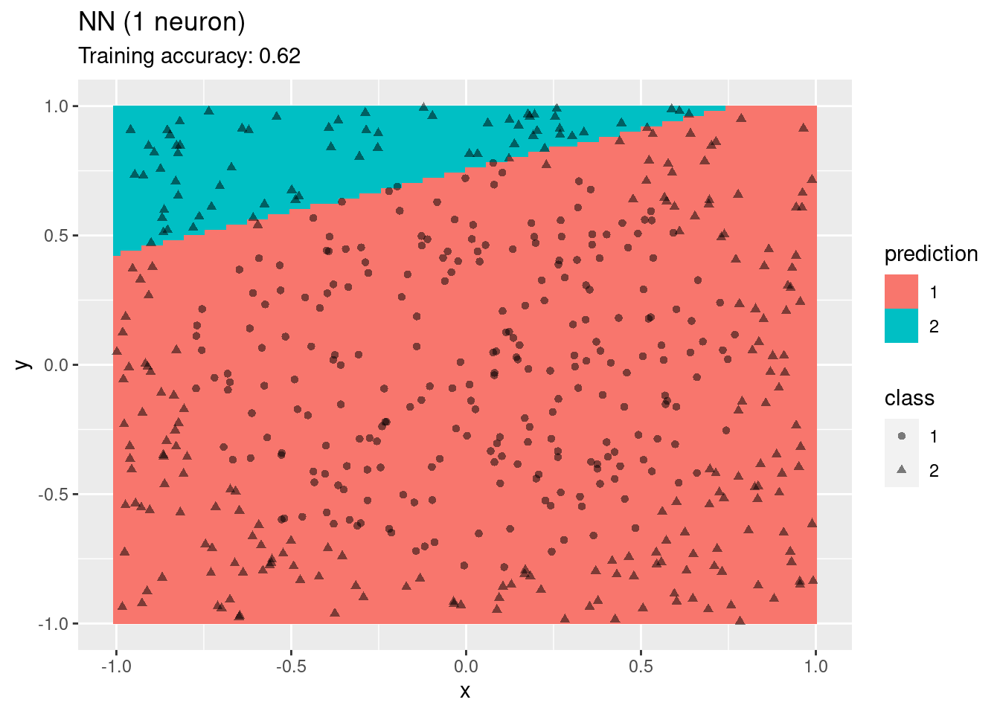
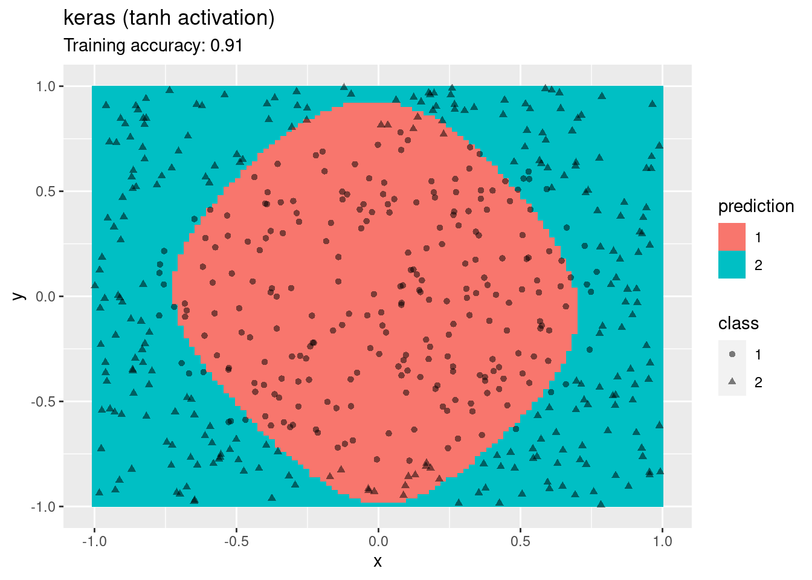

- Preface
- 1 Introduction
- 2 Data
- 3 Classification: Basic Concepts and Techniques
- 4 Classification: Alternative Techniques
- 5 Association Analysis: Basic Concepts and Algorithms
- 6 Association Analysis: Advanced Concepts
- 7 Clustering Analysis
- References
4.5 Decision Boundaries
Classifiers create decision boundaries to discriminate between classes. Different classifiers are able to create different shapes of decision boundaries (e.g., some are strictly linear) and thus some classifiers may perform better for certain datasets. This page visualizes the decision boundaries found by several popular classification methods.
The following plot adds the decision boundary by evaluating the classifier at evenly spaced grid points. Note that low resolution (to make evaluation faster) will make the decision boundary look like it has small steps even if it is a (straight) line.
library(scales)##
## Attaching package: 'scales'## The following object is masked from 'package:purrr':
##
## discard## The following object is masked from 'package:readr':
##
## col_factorlibrary(tidyverse)
library(ggplot2)
library(caret)
decisionplot <- function(model, x, cl = NULL, predict_type = "class",
resolution = 100) {
if(!is.null(cl)) {
x_data <- x %>% dplyr::select(-all_of(cl))
cl <- x %>% pull(cl)
} else cl <- 1
k <- length(unique(cl))
# resubstitution accuracy
prediction <- predict(model, x_data, type = predict_type)
if(is.list(prediction)) prediction <- prediction$class
if(is.numeric(prediction))
prediction <- factor(prediction, labels = levels(cl))
else
prediction <- factor(prediction, levels = levels(cl))
cm <- confusionMatrix(data = prediction, reference = cl)
acc <- cm$overall["Accuracy"]
# evaluate model on a grid
r <- sapply(x[, 1:2], range, na.rm = TRUE)
xs <- seq(r[1,1], r[2,1], length.out = resolution)
ys <- seq(r[1,2], r[2,2], length.out = resolution)
g <- cbind(rep(xs, each = resolution), rep(ys, time = resolution))
colnames(g) <- colnames(r)
g <- as_tibble(g)
### guess how to get class labels from predict
### (unfortunately not very consistent between models)
prediction <- predict(model, g, type = predict_type)
if(is.list(prediction)) prediction <- prediction$class
if(is.numeric(prediction))
prediction <- factor(prediction, labels = levels(cl))
else
prediction <- factor(prediction, levels = levels(cl))
g <- g %>% add_column(prediction)
ggplot(g, mapping = aes_string(
x = colnames(g)[1],
y = colnames(g)[2])) +
geom_tile(mapping = aes(fill = prediction)) +
geom_point(data = x, mapping = aes_string(
x = colnames(x)[1],
y = colnames(x)[2],
shape = colnames(x)[3]), alpha = .5) +
labs(subtitle = paste("Training accuracy:", round(acc, 2)))
}4.5.1 Iris Dataset
For easier visualization, we use on two dimensions of the Iris dataset.
set.seed(1000)
data(iris)
iris <- as_tibble(iris)
### Three classes (MASS also has a select function)
x <- iris %>% dplyr::select(Sepal.Length, Sepal.Width, Species)
x## # A tibble: 150 x 3
## Sepal.Length Sepal.Width Species
## <dbl> <dbl> <fct>
## 1 5.1 3.5 setosa
## 2 4.9 3 setosa
## 3 4.7 3.2 setosa
## 4 4.6 3.1 setosa
## 5 5 3.6 setosa
## 6 5.4 3.9 setosa
## 7 4.6 3.4 setosa
## 8 5 3.4 setosa
## 9 4.4 2.9 setosa
## 10 4.9 3.1 setosa
## # … with 140 more rowsggplot(x, aes(x = Sepal.Length, y = Sepal.Width, color = Species)) + geom_point()
Note: There is some overplotting and you could use geom_jitter() instead of geom_point().
4.5.1.1 K-Nearest Neighbors Classifier
library(caret)
model <- x %>% knn3(Species ~ ., data = ., k = 1)
decisionplot(model, x, cl = "Species") + labs(title = "kNN (1 neighbor)")
model <- x %>% knn3(Species ~ ., data = ., k = 10)
decisionplot(model, x, cl = "Species") + labs(title = "kNN (10 neighbor)")
4.5.1.2 Naive Bayes Classifier
library(e1071)
model <- x %>% naiveBayes(Species ~ ., data = .)
decisionplot(model, x, cl = "Species") + labs(title = "Naive Bayes")
4.5.1.3 Linear Discriminant Analysis
library(MASS)##
## Attaching package: 'MASS'## The following object is masked from 'package:dplyr':
##
## selectmodel <- x %>% lda(Species ~ ., data = .)
decisionplot(model, x, cl = "Species") + labs(title = "LDA")
4.5.1.4 Multinomial Logistic Regression (implemented in nnet)
Multinomial logistic regression is an extension of logistic regression to problems with more than two classes.
library(nnet)
model <- x %>% multinom(Species ~., data = .)## # weights: 12 (6 variable)
## initial value 164.791843
## iter 10 value 62.715967
## iter 20 value 59.808291
## iter 30 value 55.445984
## iter 40 value 55.375704
## iter 50 value 55.346472
## iter 60 value 55.301707
## iter 70 value 55.253532
## iter 80 value 55.243230
## iter 90 value 55.230241
## iter 100 value 55.212479
## final value 55.212479
## stopped after 100 iterationsdecisionplot(model, x, cl = "Species") + labs(titel = "Multinomial Logistic Regression")
4.5.1.5 Decision Trees
library("rpart")
model <- x %>% rpart(Species ~ ., data = .)
decisionplot(model, x, cl = "Species") + labs(title = "CART")
model <- x %>% rpart(Species ~ ., data = .,
control = rpart.control(cp = 0.001, minsplit = 1))
decisionplot(model, x, cl = "Species") + labs(title = "CART (overfitting)")
library(C50)
model <- x %>% C5.0(Species ~ ., data = .)
decisionplot(model, x, cl = "Species") + labs(title = "C5.0")
library(randomForest)## randomForest 4.6-14## Type rfNews() to see new features/changes/bug fixes.##
## Attaching package: 'randomForest'## The following object is masked from 'package:dplyr':
##
## combine## The following object is masked from 'package:ggplot2':
##
## marginmodel <- x %>% randomForest(Species ~ ., data = .)
decisionplot(model, x, cl = "Species") + labs(title = "Random Forest")
4.5.1.6 SVM
library(e1071)
model <- x %>% svm(Species ~ ., data = ., kernel = "linear")
decisionplot(model, x, cl = "Species") + labs(title = "SVM (linear kernel)")
model <- x %>% svm(Species ~ ., data = ., kernel = "radial")
decisionplot(model, x, cl = "Species") + labs(title = "SVM (radial kernel)")
model <- x %>% svm(Species ~ ., data = ., kernel = "polynomial")
decisionplot(model, x, cl = "Species") + labs(title = "SVM (polynomial kernel)")
model <- x %>% svm(Species ~ ., data = ., kernel = "sigmoid")
decisionplot(model, x, cl = "Species") + labs(title = "SVM (sigmoid kernel)")
4.5.1.7 Single Layer Feed-forward Neural Networks
library(nnet)
model <-x %>% nnet(Species ~ ., data = ., size = 1, maxit = 1000, trace = FALSE)
decisionplot(model, x, cl = "Species") + labs(title = "NN (1 neuron)")
model <-x %>% nnet(Species ~ ., data = ., size = 2, maxit = 1000, trace = FALSE)
decisionplot(model, x, cl = "Species") + labs(title = "NN (2 neurons)")
model <-x %>% nnet(Species ~ ., data = ., size = 4, maxit = 1000, trace = FALSE)
decisionplot(model, x, cl = "Species") + labs(title = "NN (4 neurons)")
model <-x %>% nnet(Species ~ ., data = ., size = 10, maxit = 1000, trace = FALSE)
decisionplot(model, x, cl = "Species") + labs(title = "NN (10 neurons)")
4.5.1.8 Deep Learning with keras
library(keras)define predict so it works with decision plot
predict.keras.engine.training.Model <- function(object, newdata, ...)
predict_classes(object, as.matrix(newdata))Choices are the activation function, number of layers, number of units per layer and the optimizer. A L2 regularizer is used for the dense layer weights to reduce overfitting. The output is a categorical class value, therefore the output layer uses the softmax activation function, the loss is categorical crossentropy, and the metric is accuracy.
model <- keras_model_sequential() %>%
layer_dense(units = 10, activation = 'relu', input_shape = c(2),
kernel_regularizer=regularizer_l2(l=0.01)) %>%
layer_dense(units = 4, activation = 'softmax') %>%
compile(loss = 'categorical_crossentropy', optimizer = 'adam', metrics = 'accuracy')
history <- model %>% fit(
as.matrix(x[,1:2]),
x %>% pull(3) %>% as.integer %>% to_categorical(),
epochs = 100,
batch_size = 10
)
history##
## Final epoch (plot to see history):
## loss: 0.7084
## accuracy: 0.68decisionplot(model, x, cl = "Species") + labs(title = "keras (relu activation)")
model <- keras_model_sequential() %>%
layer_dense(units = 10, activation = 'tanh', input_shape = c(2),
kernel_regularizer = regularizer_l2(l = 0.01)) %>%
layer_dense(units = 4, activation = 'softmax') %>%
compile(loss = 'categorical_crossentropy', optimizer = 'adam', metrics = 'accuracy')
history <- model %>% fit(
as.matrix(x[,1:2]),
x %>% pull(3) %>% as.integer %>% to_categorical(),
epochs = 100,
batch_size = 10
)
history##
## Final epoch (plot to see history):
## loss: 0.552
## accuracy: 0.7267decisionplot(model, x, cl = "Species") + labs(title = "keras (tanh activation)")
4.5.2 Circle Dataset
This set is not linearly separable!
set.seed(1000)
library(mlbench)
x <- mlbench.circle(500)
###x <- mlbench.cassini(500)
###x <- mlbench.spirals(500, sd = .1)
###x <- mlbench.smiley(500)
x <- cbind(as.data.frame(x$x), factor(x$classes))
colnames(x) <- c("x", "y", "class")
x <- as_tibble(x)
x## # A tibble: 500 x 3
## x y class
## <dbl> <dbl> <fct>
## 1 -0.344 0.448 1
## 2 0.518 0.915 2
## 3 -0.772 -0.0913 1
## 4 0.382 0.412 1
## 5 0.0328 0.438 1
## 6 -0.865 -0.354 2
## 7 0.477 0.640 2
## 8 0.167 -0.809 2
## 9 -0.568 -0.281 1
## 10 -0.488 0.638 2
## # … with 490 more rowsggplot(x, aes(x = x, y = y, color = class)) + geom_point()
4.5.2.1 K-Nearest Neighbors Classifier
library(caret)
model <- x %>% knn3(class ~ ., data = ., k = 1)
decisionplot(model, x, cl = "class") + labs(title = "kNN (1 neighbor)")
model <- x %>% knn3(class ~ ., data = ., k = 10)
decisionplot(model, x, cl = "class") + labs(title = "kNN (10 neighbor)")
4.5.2.2 Naive Bayes Classifier
library(e1071)
model <- x %>% naiveBayes(class ~ ., data = .)
decisionplot(model, x, cl = "class") + labs(title = "naive Bayes")
4.5.2.3 Linear Discriminant Analysis
library(MASS)
model <- x %>% lda(class ~ ., data = .)
decisionplot(model, x, cl = "class") + labs(title = "LDA")
4.5.2.4 Multinomial Logistic Regression (implemented in nnet)
Multinomial logistic regression is an extension of logistic regression to problems with more than two classes.
library(nnet)
model <- x %>% multinom(class ~., data = .)## # weights: 4 (3 variable)
## initial value 346.573590
## final value 346.308371
## convergeddecisionplot(model, x, cl = "class") + labs(titel = "Multinomial Logistic Regression")
4.5.2.5 Decision Trees
library("rpart")
model <- x %>% rpart(class ~ ., data = .)
decisionplot(model, x, cl = "class") + labs(title = "CART")
model <- x %>% rpart(class ~ ., data = .,
control = rpart.control(cp = 0.001, minsplit = 1))
decisionplot(model, x, cl = "class") + labs(title = "CART (overfitting)")
library(C50)
model <- x %>% C5.0(class ~ ., data = .)
decisionplot(model, x, cl = "class") + labs(title = "C5.0")
library(randomForest)
model <- x %>% randomForest(class ~ ., data = .)
decisionplot(model, x, cl = "class") + labs(title = "Random Forest")
4.5.2.6 SVM
library(e1071)
model <- x %>% svm(class ~ ., data = ., kernel = "linear")
decisionplot(model, x, cl = "class") + labs(title = "SVM (linear kernel)")
model <- x %>% svm(class ~ ., data = ., kernel = "radial")
decisionplot(model, x, cl = "class") + labs(title = "SVM (radial kernel)")
model <- x %>% svm(class ~ ., data = ., kernel = "polynomial")
decisionplot(model, x, cl = "class") + labs(title = "SVM (polynomial kernel)")
model <- x %>% svm(class ~ ., data = ., kernel = "sigmoid")
decisionplot(model, x, cl = "class") + labs(title = "SVM (sigmoid kernel)")
4.5.2.7 Single Layer Feed-forward Neural Networks
library(nnet)
model <-x %>% nnet(class ~ ., data = ., size = 1, maxit = 1000, trace = FALSE)
decisionplot(model, x, cl = "class") + labs(title = "NN (1 neuron)")
model <-x %>% nnet(class ~ ., data = ., size = 2, maxit = 1000, trace = FALSE)
decisionplot(model, x, cl = "class") + labs(title = "NN (2 neurons)")
model <-x %>% nnet(class ~ ., data = ., size = 4, maxit = 1000, trace = FALSE)
decisionplot(model, x, cl = "class") + labs(title = "NN (4 neurons)")
model <-x %>% nnet(class ~ ., data = ., size = 10, maxit = 1000, trace = FALSE)
decisionplot(model, x, cl = "class") + labs(title = "NN (10 neurons)")
4.5.2.8 Deep Learning with keras
library(keras)redefine predict so it works with decision plot
predict.keras.engine.training.Model <- function(object, newdata, ...)
predict_classes(object, as.matrix(newdata))Choices are the activation function, number of layers, number of units per layer and the optimizer. A L2 regularizer is used for the dense layer weights to reduce overfitting. The output is a categorical class value, therefore the output layer uses the softmax activation function, the loss is categorical crossentropy, and the metric is accuracy.
model <- keras_model_sequential() %>%
layer_dense(units = 10, activation = 'relu', input_shape = c(2),
kernel_regularizer=regularizer_l2(l = 0.0001)) %>%
layer_dense(units = 3, activation = 'softmax') %>%
compile(loss = 'categorical_crossentropy', optimizer = 'adam', metrics = 'accuracy')
history <- model %>% fit(
as.matrix(x[,1:2]),
x %>% pull(3) %>% as.integer %>% to_categorical(),
epochs = 100,
batch_size = 10
)
history##
## Final epoch (plot to see history):
## loss: 0.1849
## accuracy: 0.95decisionplot(model, x, cl = "class") + labs(title = "keras (relu activation)")
model <- keras_model_sequential() %>%
layer_dense(units = 10, activation = 'tanh', input_shape = c(2),
kernel_regularizer = regularizer_l2(l = 0.0001)) %>%
layer_dense(units = 3, activation = 'softmax') %>%
compile(loss = 'categorical_crossentropy', optimizer = 'adam', metrics = 'accuracy')
history <- model %>% fit(
as.matrix(x[,1:2]),
x %>% pull(3) %>% as.integer %>% to_categorical(),
epochs = 100,
batch_size = 10
)
history##
## Final epoch (plot to see history):
## loss: 0.3817
## accuracy: 0.922decisionplot(model, x, cl = "class") + labs(title = "keras (tanh activation)")